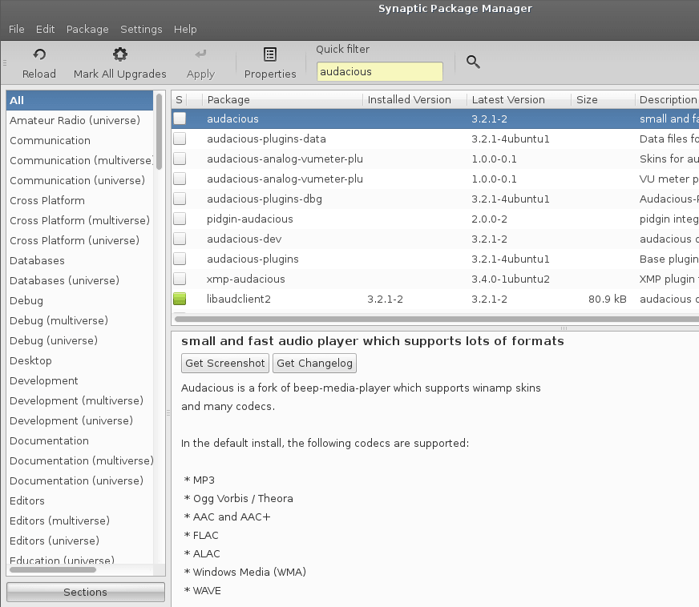
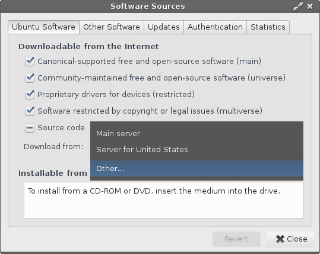
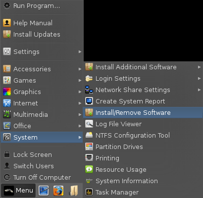
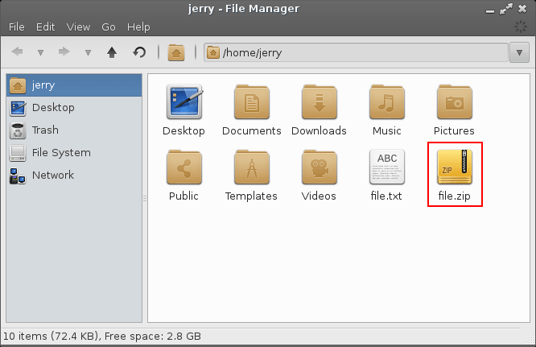
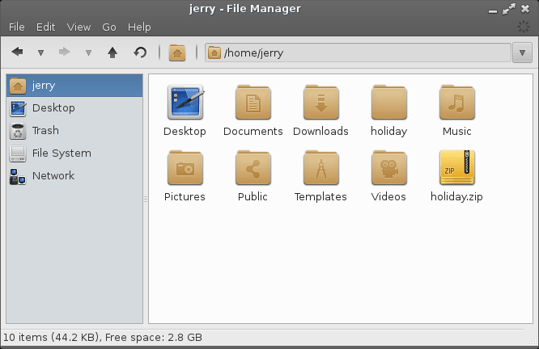

Software & Updates
Updates
Change your Software Updates Country Location
Adding a PPA
Creating & Extracting Zip files
Other Software - Install popular programs
A word on changing Desktop Environments
Installing & Removing software
Linux Lite uses the Synaptic Package Manager to manage software.
IMPORTANT: Before you run Install/Remove
Software for the first time, read this first.
Then come back to here to learn how to install and remove software.
To install software use the following steps:
1. Click on Menu, System, Install/Remove Software

2. Make sure All is selected in the left pane and in the Quick Filter or spy glass type in your search query. In this example we will search for the 'audacious' music player.

3. Double click on the package you want to install.
4. Some software will ask you to Mark additional required changes? These are also known as dependencies and are required for the program to function properly.
5. Click on Mark. Now hit the Apply button on the Synaptic toolbar. The software will install and a Menu entry will be created in the relevant Menu category. For audacious the Menu category would be Multimedia.
6. Go to the Menu and your new software will be there. An alternative way to find your new software is to click on Menu, Accessories, Application Finder. Type your program name in the Search box and the result will display on the right. Double click on the program name and it will launch for you.
Uninstalling Software:
7. Uninstalling software is the reverse process of installing software in the Synaptic Package Manager. Type the name of the software into the Quick Filter or spy glass box.
8. Right click on the software and select Mark for Removal. Now hit the Apply button on the Synaptic toolbar and your software will uninstall. Be very careful with this process as you can inadvertently uninstall crucial system software. If you have any doubts, please search the net first to see if it is safe to uninstall the software. Synaptic is pretty good at warning you should there be any potential problems.
Keeping Linux Lite up to date is a simple process.
At the top of your Menu, you will see Install Updates.
We've made the update process as simple as possible. Simply click on Install Updates and you will be asked for your password. The program will then search for updates and if it finds any it will ask you if you want to continue. Type Y and then hit enter if you do. The updates will also download the latest version of the Linux Lite Help & Support Manual so you will always have the latest help information at your fingertips. Click on Menu, Help & Support to view the Help Manual.
Change your Software Updates Country Location
To ensure that you get your updates and software downloaded
as fast as possible, try selecting a location close to you.
In the following tutorial we will show you how to do this.
Click on Menu, System, Install/Remove Software and enter your password.
Synaptic Package Manager will open up, click on Settings, Repositories.
The Software Sources window will pop up. From the Download from: drop down box, select Other...

A Choose a Download Server box will pop up. From here select your country, and then a server, preferably an Ubuntu server if it is listed or another server if an Ubuntu server is not in the list. Click on the Choose Server button once you have made your selection. Now click on Close in the Software Sources window.
In the top left of the Synaptic Package Manager window, click on the Reload button. This will change all the software sources to your location for faster downloads.
The following window will appear, then close when it has finished.
You should now have faster downloads for updates and software installs in Synaptic Package Manager from a location much nearer you. Click here to learn how to install and remove software.
A PPA is a repository containing one or more applications. These are often set up for new software programs or updated versions of some applications. To add a new PPA to your system, follow the guide below.
Go to Menu, System, Install/Remove Programs. Enter your password when asked.

Go to Settings, Repositories.
Click on the Other Software tab and click on the Add
(bottom left) button and paste into the box the address of
the PPA.
In this example, we are going to add Spotify to our
system. Now click on Add Source. To finish, click on
Close.
Close Synaptic Package Manager.
Each PPA comes with a signed key. This is a security measure and ensures that the person who created the PPA has followed strict standards. Open up a terminal and type in the key string:
| sudo apt-key adv --keyserver keyserver.ubuntu.com --recv-keys 94558F59 |
Now in the same terminal type in:
| sudo apt-get update && sudo apt-get install spotify-client |
This will update your sources to include the new Spotify repository. The second part of the command will install Spotify for you. Your new program is now installed and ready to use.
Creating and Extracting Zip files
Sometimes we may have a collection of pictures to send someone over email. Good practice is to zip these files up so that the overall size is much less. The following is an example of how to zip files and folders.
Linux Lite supports creation and extraction of these file types: .zip .rar .tar .tar.gz .tar.bz2 .7z
Creating a zip file
Right click on any file or folder and select Create Archive.
A new window will pop up. From here, type in the Name:
of the file eg. file.zip
For the Archive type select zip and when you
are ready, click on the Create button.
We now have a file called file.zip

Zipping up multiple files
Best practice here is to place all the files you want to zip up into a folder. In this example we have a folder called holiday and inside 4 files.
Go back to your home folder and right click on the folder
containing the files you wish to zip up.
Right click the folder and select Create Archive
A new window will pop up. From here, type in the Name:
of the file eg. holiday.zip
For the Archive type select zip and when you
are ready, click on the Create button.
We now have a zip file called holiday.zip

Extracting Zip files
Right click on the zip file and select Extract Here

We how have a folder called holiday, with our 4 files inside of it.
Other Software - Install popular programs
Skype - A popular voice, webcam and instant messaging client.
Open a terminal and type:
| sudo add-apt-repository "deb
http://archive.canonical.com/
$(lsb_release -sc) partner" sudo apt-get update && sudo apt-get install skype -y |
When the install has finished, Skype can be found in
Menu, Internet.
TeamViewer - A remote desktop application for Mac, Windows and Linux.
For 32bit and 64bit open a terminal and type:
| wget http://www.teamviewer.com/download/teamviewer_linux.deb sudo dpkg -i teamviewer_linux.deb rm -rf teamviewer* |
When the install has finished, TeamViewer can be found in
Menu, Internet.
Google Chrome - Popular web browser from Google.
For 32bit open a terminal and type:
| wget https://dl.google.com/linux/direct/google-chrome-stable_current_i386.deb sudo dpkg -i google-chrome* rm -rf google-chrome* |
For 64bit open a terminal and type:
| wget
https://dl.google.com/linux/direct/google-chrome-stable_current_amd64.deb sudo dpkg -i google-chrome* rm -rf google-chrome* |
When the install has finished, Google Chrome can be found in Menu, Internet.
Google Talk Plugin - Needed for voice and webcam support in Google Hangouts.
For 32bit open a terminal and type:
| wget https://dl.google.com/linux/direct/google-talkplugin_current_i386.deb sudo dpkg -i google-talkplugin* rm -rf google-talkplugin* |
For 64bit open a terminal and type:
| wget
https://dl.google.com/linux/direct/google-talkplugin_current_amd64.deb sudo dpkg -i google-talkplugin* rm -rf google-talkplugin* |
When the install has finished, the Google Talk Plugin
will be integrated into your system.
Java plugin for Firefox and Chromium - Enables the viewing and running of java applets.
For 32bit and 64bit open a terminal and type:
| sudo apt-get install icedtea-6-plugin |
When the install has finished, restart your browser to enable java applets.
Dropbox - A file storage cloud service.
Go to https://www.dropbox.com/install?os=lnx choose either the Ubuntu 32bit or 64bit download link.
Double click on the dropbox .deb file and follow the onscreen instructions.
When the install has finished, Dropbox can be found in Menu, Internet.
FF Multi Converter - A simple yet powerful graphical application which enables you to convert audio, video, image and document files between all popular formats, using and combining other programs.
Open a terminal and type:
| sudo add-apt-repository ppa:ffmulticonverter/stable sudo apt-get update sudo apt-get install ffmulticonverter |
When the install has finished, FF Multi Converter can be found in
Menu, Multimedia.
XBMC - The XBMC Media Center is a free cross-platform media player and entertainment system.
Open a terminal and type:
| sudo add-apt-repository ppa:team-xbmc/ppa sudo apt-get update sudo apt-get install xbmc |
When the install has finished, XBMC Media Center can be found in
Menu, Multimedia.
Netflix - stream tv shows and movies.
Open a terminal and type:
| sudo add-apt-repository ppa:ehoover/compholio sudo apt-get update && sudo apt-get install netflix-desktop |
Follow the onscreen instructions for downloading the required
additional files.
When the install has finished, Netflix Desktop can be found in
Menu, Multimedia.
Watch Apple Trailers - to watch movie trailers from the apple trailers website.
Open a terminal and type:
| sudo apt-get install totem-mozilla sudo apt-get install ubuntu-restricted-extras |
Open a new tab on Firefox (works in Chrome to ) browse to
http://trailers.apple.com/.
This distro is a heavily modified version of the XFCE desktop environment. However, being GNU/Linux based allows people the freedom to modify their system as they see fit. There are numerous desktop environments in GNU/Linux. Including but not limited to:
Gnome
KDE
LXDE
Razor-qt
If you desire to install another desktop environment, we cannot provide specific instructions on how to do this. There are far to many variables involved and much can go wrong. This kind of system modification is best left to experienced Linux users. The whole philosophy behind Linux Lite is to provide new users to Linux based operating systems an easy to use, functional desktop experience. Our development time is spent solely on the XFCE end user experience.